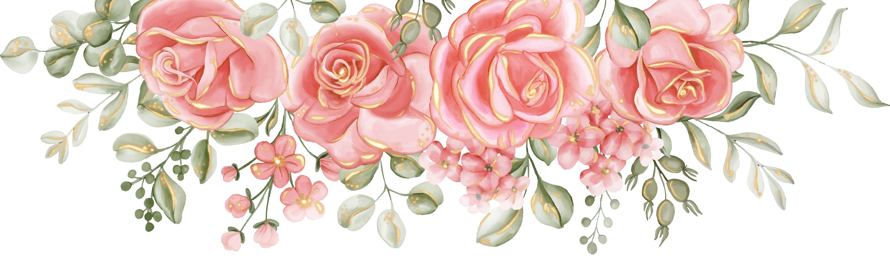
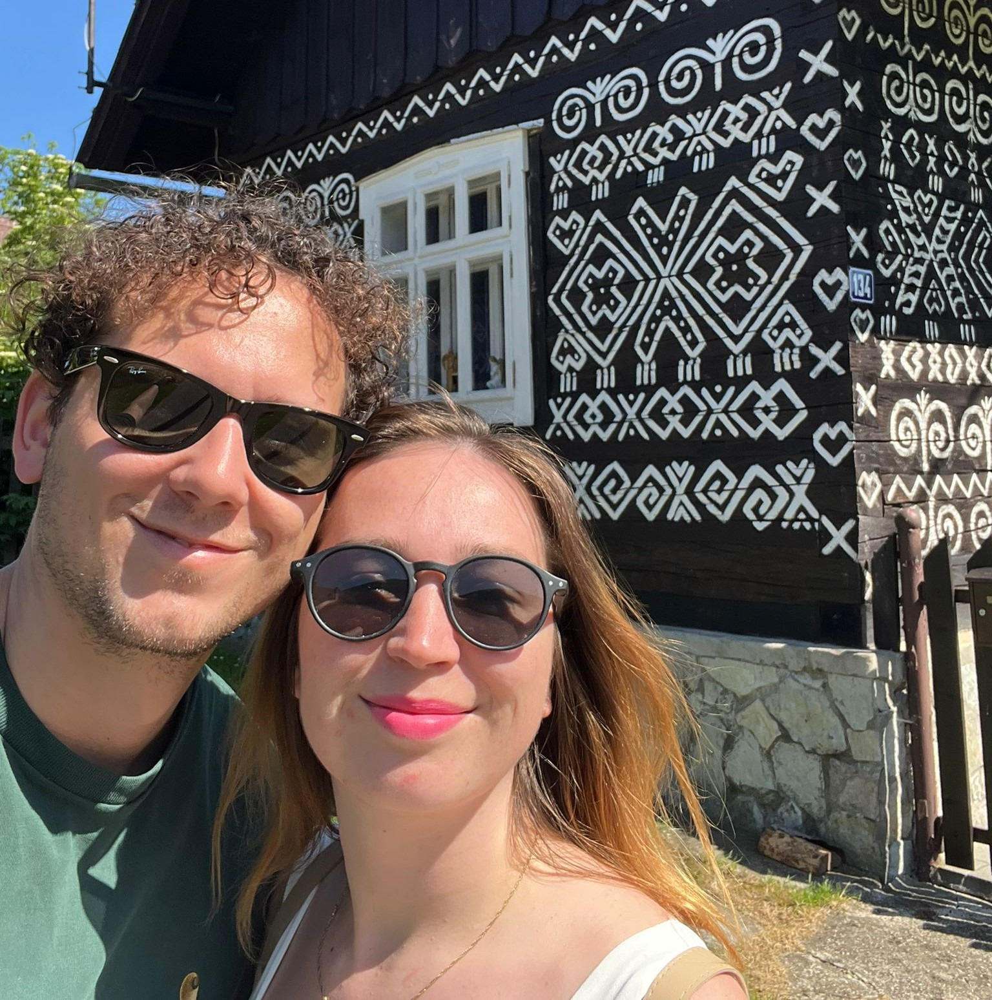
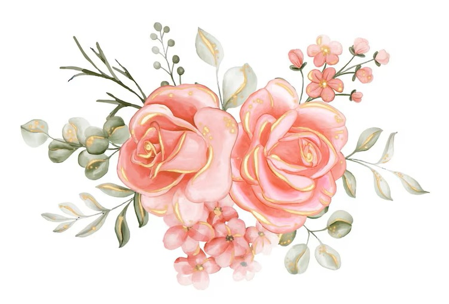
Harmonogram
13:00 - 14:00 Příjezd hostů a občerstvení 16:00 Obřad pod vedením paní farářky, dá-li Pán Bůh 16:30 Společné focení 17:00 Raut v oranžerii 17:30 - *:00 Zábava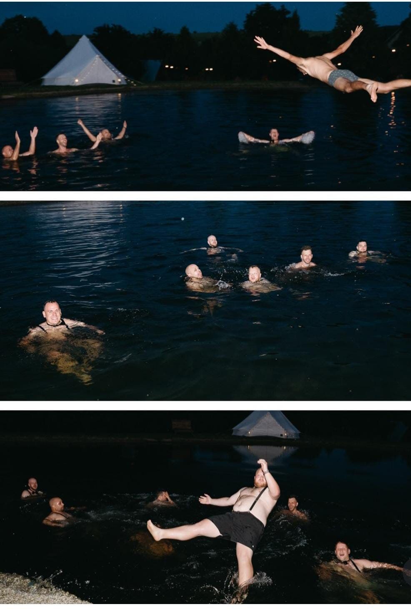
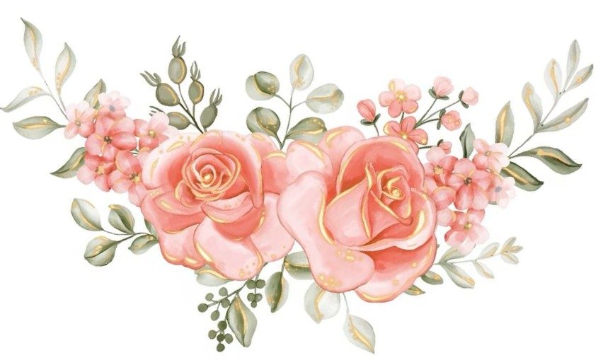
Kontaktní osoby
Svědek
Marek
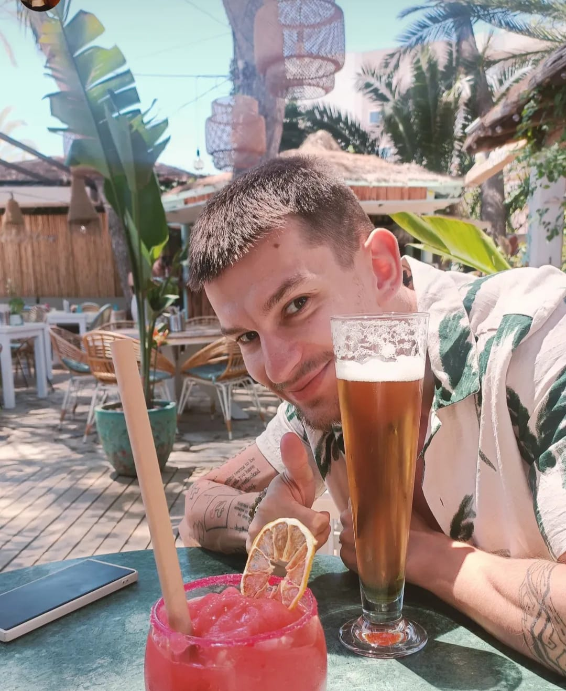
Svědkyně
Martina
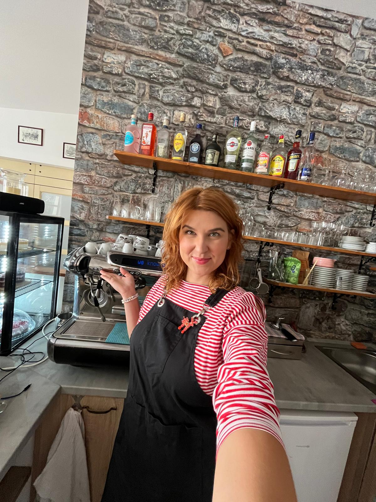
Detailní průvodce dnem svatebních hostů
❀ Po vlastní ose se dopravit na místo konání: Dvůr Honětice.
❀ Zaparkovat před areálem.
❀ Zavolat kontaktní osobu Mareka na tel. +421 944 994 410.
❀ Ubytovat se, pokud budete přespávat. Marek vás navede do vašeho pokoje/chatky.
❀ Dojít do zázemí biotopu a zde konverzovat, jíst a střídmo pít.
❀ Dostavit se na svatební obřad pod ořech.
❀ Společně se vyfotit. Pokud možno ještě s oblečeným sakem a čistou košilí.
❀ Přesunout se do oranžérie.
❀ Užít si příhovor a vybrat si dobré jídlo z rautu.
❀ Zúčastnít se házení kytice a flašky.
Plánek areálu:
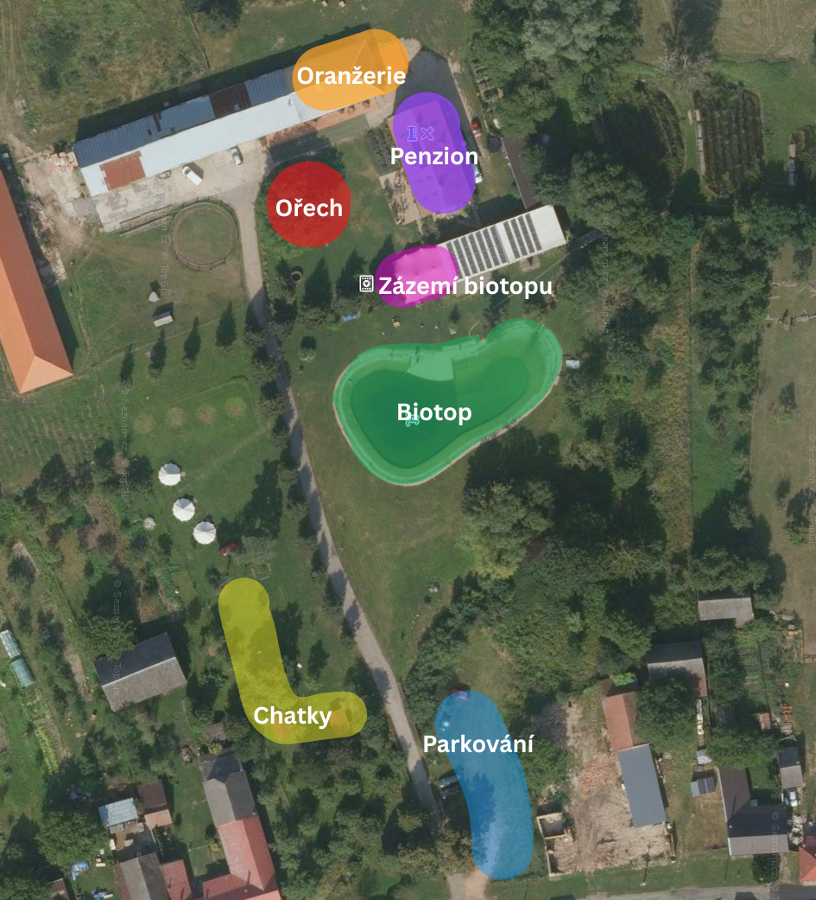
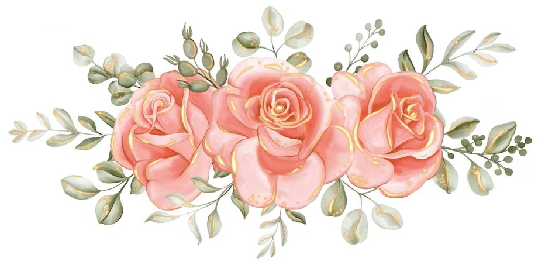
Dobré vědět
‼️Přísný zákaz pokládat ve svatební den nevěstě nebo ženichovi organizační dotazy‼️️
❀ Na veškeré dotazy odpoví svědkové.
❀ Pokud budete na svatbě přespávat, bude pro vás zajištěno ubytování.
❀ Pokoje v penzionu jsou vybaveny koupelnou a WC.
❀ Chatky mají topení a umyvadlo. Nemají koupelnu ani WC.
❀ WC je v oranžerii, v penzionu a v zázemí biotopu.
❀ V zázemí biotopu jsou taktéž sprchy.
❀ Na svatbě bude zajištěno jídlo, nealko pití a toto alko:
᪥ Pivo
᪥ Víno
᪥ Prosecco
᪥ Domácí
❀ Ostatní alkohol je možné si individuálně zaplatit na baru.
❀ Vezměte si spíše teplejší oblečení.
❀ Nenoste žádné květiny. Ani růže.
❀ Uvítáme raději peněžní dary a výherní losy.
❀ Neočekávejte svatební tradice.
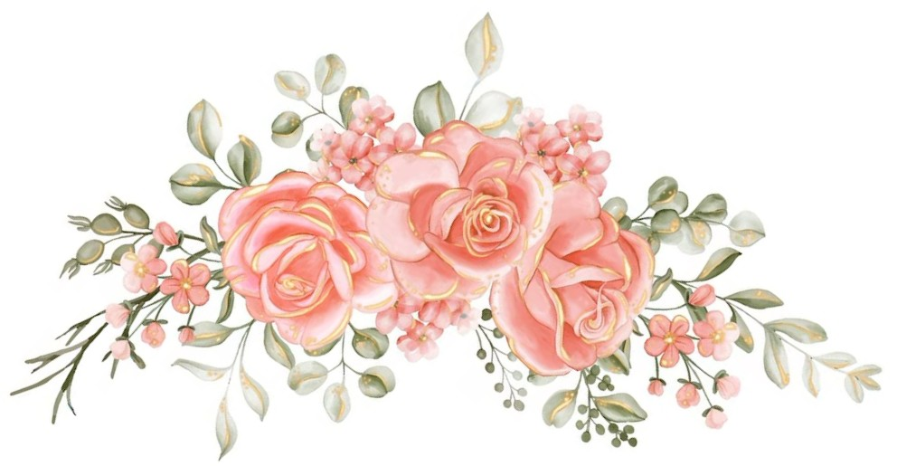
Dress code
Formální dress code.
Obuv bez jehlových podpatků. Venkovní prostory areálu jsou travnaté.
šaty a košile květinových vzorů jsou vítany.
Kravaty a motýlci nejsou povinné.
Nehodící se: černá, červená a oranžová barva. Rifle a károvaná košile.
Barevná paleta svatby:
Playlist
Přidejte skladby, které chcete, aby Vám zazněly na svatbě.
Skladby přidávejte zde.
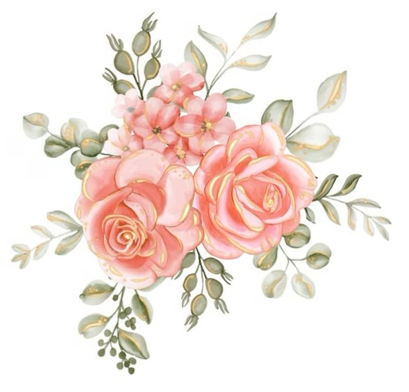